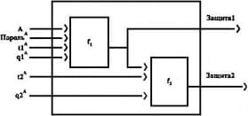
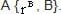
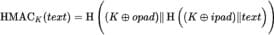

УДК 004
О. С. Грищенко, А. В. Чернышова Донецкий национальный технический университет
кафедра программной инженерии alla@donntu.org, olleg1996@mail.ru
Постановка задачи
Аутентификация является важной частью любой распределенной программной системы. На сегодняшний день существует несколько основных подходов к аутентификации в программных системах и множество вариантов реализации этих подходов. Не все алгоритмы аутентификации обеспечивают одинаковый уровень защищенности и обычно имеют свою область применения. В связи с этим было решено рассмотреть алгоритмы и протоколы аутентификации, которые используются в современных распределенных программных системах, оценить их достоинства и недостатки.
Цель работы
Целью данной работы является анализ подходов к аутентификации в программных системах, рассмотрение принципов работы алгоритмов аутентификации, используемых в современных распределенных программных системах, исследование существующих стандартов в области аутентификации.
паролей было выяснено, что самыми популярными являются такие пароли как "123456", "123456789", "qwerty", "12345678".
Причем пароль "123456" использовали 17% пользователей [1]. Взлом таких паролей с помощью современных инструментов подбора паролей займет не более нескольких секунд.
Можно добиться большей защищенности путем использования специальных генераторов паролей, с помощью регулярной смены пароля и за счет использования различных паролей для разных ресурсов. Можно выделить требования к системам, реализующим аутентификацию пользователя по паролю, которые помогут значительно повысить защищенность таких систем:
приложение не должно позволять создавать простые пароли;
приложение должно предусматривать защиту от перебора паролей;
если в процессе работы приложения пароль передается по сети, то при передаче должно использоваться защищенное соединение;
пароли не должны храниться в открытом
виде;
Основные способы аутентификации
Наиболее простым способом аутентификации является аутентификация по паролю. При регистрации на ресурсе пользователь задает свой логин (имя, телефон, email) и пароль. При аутентификации необходимо проверить соответствие логина и пароля. Такой способ аутентификации дает достаточно слабый уровень защиты. Прежде всего, пользователь сам задает и хранит пароль. При этом пароль может быть коротким (так что его можно будет легко подобрать простым перебором) или предсказуемым. Например, по состоянию на 2016 год в результате исследования 10000000 пользовательских
приложение должно предоставлять надежную процедуру изменения пароля;
во время выполнения критических действий должна запрашиваться повторная аутентификация.
RFC 7235 [2] описывает протокол аутентификации для HTTP на основе логина и пароля. При обращении неавторизованного клиента к защищенному ресурсу, сервер отправляет ответ "401" и добавляет в заголовок описание схемы аутентификации целевого ресурса. Получив такой ответ, клиент запрашивает у пользователя логин и пароль и отправляет эти параметры серверу в поле Authorisation. Сервер проводит аутентификацию пользователя по полученным данным. Далее поле Authorisation добавляется ко всем запросам
на данный сервер. Описанный обмен данными должен проходить с использованием протокола TLS, так как эта схема не обеспечивает защиту пользовательских данных.
Часто при аутентификации по паролю используются токены. После аутентификации по паролю сервер генерирует некоторую информацию – токен (обычно на основе идентификатора сессии или данных пользователя) и отправляет клиенту. К последующим запросам пользователя автоматически добавляется токен, на основе которого сервер проводит авторизацию. Для усиления безопасности токен может быть подписан и зашифрован сервером и иметь срок действия. Данный подход позволяет отказаться от передачи пользовательских данных при каждом запросе и даже в случае перехвата токена злоумышленник сможет использовать его только в текущей сессии.
Более безопасным подходом к аутентификации является использование системы PKI (инфраструктура открытых ключей).
Основными компонентами PKI системы являются центр сертификации и пользователи. Пользователи взаимодействуют между собой, используя сертификаты, выданные центром сертификации. Понятие сертификатов определено в RFC5280 [3] (стандарт X.509). Для обеспечения аутентификации на основе сертификатов используются криптографические алгоритм с открытым ключом. Сертификат представляет собой набор данных, идентифицирующий владельца, а также его открытый ключ.
Для использовании на территории России RFC 4491 описывает сертификат, использующий российские криптографические алгоритмы GOST R 34.10-94, GOST R 34.10-2001, GOST R 34.11-
94. [4]
Далее описан общий принцип аутентификации на основе сертификатов. Допустим есть участники информационного обмена А и В и центр сертификации ЦС. А генерирует открытый и закрытый ключи и получает сертификат у ЦС, содержащий открытый ключ А. А отправляет В сертификат. В проверяет подпись сертификата с помощью открытого ключа ЦС. После этого В может передавать данные, шифруя их с помощью открытого ключа А, содержащегося в сертификате. При этом центр сертификации должен пользоваться доверием у обоих участников информационного обмена.
На практике обычно используются иерархические PKI системы, состоящие из множества пользователей и центров сертификации. Центры сертификации создают иерархию, где нижестоящие центры доверяют вышестоящим. Вышестоящие ЦС выдают
сертификаты нижестоящим. Корневым в этой структуре является головной центр сертификации, который сам подписывает себе сертификат. Пользователи, желающие обменяться информацией, могут не принадлежать одному и тому же центру сертификации. В таком случае пользователь А не может доверять сертификату пользователя В, выданному неизвестным ЦС. Для решения этой проблемы необходимо построить путь сертификации от проверяемого сертификата до любого из доверенных центров. Например, пользователь А пытается проверить сертификат пользователя Е. А доверят центру сертификации Б. Б подписал сертификат В, В подписал сертификат Г, а Г подписал сертификат Е. Так как существует цепь доверия от Б к Е(Б ->В->Г-
>Е) пользователь А может доверять сертификату пользователя Е.
Сертификат может быть отозван. В таком случае он помещается в CertificateRevocationList (список аннулированных сертификатов).
Государственные стандарты в области аутентификации
Стандарт аутентификации описывает ГОСТ Р ИСО/МЭК 9594-8-98 — Основы
аутентификации [5]. Данный ГОСТ описывает 2 варианта аутентификации: простая на основе пароля и строгая, использующая ассиметричные криптографические алгоритмы. Простая аутентификация предназначена в основном для локального использования.
Простая аутентификация может быть выполнена несколькими способами:
передача имени пользователя и пароля в открытом виде получателю для проверки;
передача хэша от имени пользователя, пароля и некоторой дополнительной информации;
передача информации, описанной в предыдущем пункте, вместе со случайным числом и/или отметкой времени после применения однонаправленной функции.
Второй и третий способы представлены на рисунке 1.Эти способы простой аутентификации обеспечивают защиту передаваемых данных.

Рисунок 1 – Простая защищенная аутентификация
Здесь А - имя пользователя, t - отметка времени, q^ - случайные числа, f1 и f2 однонаправленные функции.
Незащищенные пароли предполагают минимальную степень безопасности и не могут рассматриваться как основа услуг аутентификации.
Строгая аутентификация основана на использовании ассиметричных криптографических систем. Пользователи идентифицируются на основе владения личным ключом. Для того, чтобы проверить, обладает ли собеседник личным ключом другого пользователя, необходимо обладать ключом общего пользования этого пользователя. Для того, чтобы проверить принадлежность открытых ключей пользователей, должна существовать непрерывная цепочка доверительных точек. Для построения такой цепочки выполняется поиск общей точки доверия. Уполномоченный по сертификации (аналог центра сертификации PKI системы), далее УС, создает сертификат пользователя, подписывая следующую информацию: имя пользователя, ключ общего пользования, и, опционально, уникальный идентификатор. Для того, чтобы любой пользователь имел доступ к ключу общего пользования УС, запись каждого уполномоченного по сертификации содержит сертификаты двух типов. Первый тип – это срочные сертификаты, созданные другими уполномоченными по сертификации. Второй тип
– это реверсивные сертификаты. Сертификаты этого типа уполномоченный по сертификации выдает себе сам.
Список сертификатов, необходимый для того, чтобы пользователь мог получить общий ключ другого пользователя, называется "путь сертификации". Каждый элемент такого списка является сертификатом уполномоченного по сертификации следующего элемента в списке.В общем случае, перед выполнением аутентификации строится путь сертификации. Далее описаны процедуры строгой аутентификации.
Однонаправленная аутентификация использует одну передачу информации от пользователя А пользователю В и позволяет установить подлинность участников обмена, происхождение и получателей маркера аутентификации, целостность и новизну маркера аутентификации.
В двунаправленной аутентификации используется дополнительный ответ от В к А. Двунаправленная аутентификация дополнительно устанавливает, что маркер аутентификации ответа был сгенерирован В и предназначен для А, целостность и новизну маркера аутентификации пользователя В.
При трехнаправленной аутентификации добавляется дополнительная передача от А к В. Трехнаправленная аутентификация устанавливает те же свойства, что двухнаправленная, но не нуждается в проверке меток времени.
Для каждой из описываемых ниже процедур аутентификации предполагается, что сторона А выполнила проверку всех сертификатов в пути аутентификации.
При однонаправленной аутентификации выполняются следующие шаги:
А создает rA (неповторяющийся номер), который используется для обнаружения повторных угроз и предотвращения подделок;
А посылает к В сообщение, содержащее следующие данные:
путь сертификации от В к А (ВА)
отметка времени (tA), содержащая дату истечения срока действия маркера;
rA;
имя или численный идентификатор В;
данные, аутентификация отправителя которых обеспечивается с помощью подписи;
данные, в последствии используемые в качестве личного ключа, зашифрованные с помощью открытого ключа B.
На рисунке 2 представлена структура передаваемого сообщения.
Рисунок 2 – Структура сообщения при однонаправленной аутентификации
Здесь А{данные} означает данные, подписанные А.
Пользователь В выполняет следующие действия:
получает публичный ключ А, проверяет, что срок сертификата пользователя А не истек;
проверяет целостность полученной информации;
проверяет, что информация предназначена для передачи ему;
проверяет, что отметка времени имеет значение "текущее";
может проверить, что rA повторно не использован.
Двунаправленная аутентификация на первых этапах происходит так же, как и однонаправленная, но после получения маркера от А, В отправляет сообщение, содержащее метку времени tB, имя или численный идентификатор A, rA, данные, аутентификация отправителя которых обеспечивается с помощью подписи и данные, которые могут использоваться, в качестве личного ключа (зашифрованные открытым ключом B). На рисунке 3 представлена структура сообщения, передаваемого от В к А.
Рисунок 3 - Структура сообщения, передаваемого от В к А
Пользователь А проверяет целостность полученной информации, проверяет, что он является получателем, проверяет, что отметка времени имеет значение "текущее". Также А может проверить, что rA не используется повторно. При трехнаправленной аутентификации происходит передача сообщений от А к В и от В к А как в случае двунаправленной аутентификации, за исключением того, что метки времени tA и tB могут быть нулевыми и не должны проверяться. Затем пользователь А проверяет соответствие переданного rA полученному и передает B маркер аутентификации, представленный на рисунке 4.

Рисунок 4 – Повторный маркер аутентификации, передаваемый от А к В
В проверяет целостность полученной информации и сверяет полученный и отправленный rВ.
Ранее также использовались американские стандарты аутентификации FIPS 113 — COMPUTER DATA AUTHENTICATION и FIPS
196. Стандарт FIPS 113 описывал аутентификацию данных на основе алгоритма DES и был отозван в 2008 году как не удовлетворяющий текущим требованиям безопасности. Стандарт FIPS 196 описывал аутентификацию, основанную на открытом ключе, и был отозван в 2015 году по той же причине. Действующим стандартом остается алгоритм HMAC (FIPS PUB 198) [6]. Этот алгоритм описывает процедуру подписи данных на основе общего ключа. Алгоритм HMAC можно описать следующей формулой, представленной на рисунке 5.

Рисунок 5 – Формирование подписи на основе HMAC
Здесь H() обозначает применение некоторой хэш-функции, text - подписываемые данные, К– ключ (дополненный или урезанный до размера блока), opad – блок вида (0x5c, 0x5c...0x5c), ipad – блок вида (0x36, 0x36 … 0x36). Ключи, длина которых меньше половины длины хэша, возвращаемого H, считаются небезопасными. Реализация HMAC является обязательной для IPsec. Также алгоритм используется в протоколе TLS. Главный недостаток HMAC – требуются две доверяющие друг другу стороны (знающие общий ключ).
Описание современных протоколов аутентификации
Протокол TLS использует для аутентификации пользователей сертификаты, а для аутентификации и сохранения целостности данных HMAC.TLS ориентирован на обеспечение безопасности соединения в клиент – серверных приложениях. Процедура аутентификации и согласования ключей TLS состоит из следующих шагов:
установление TCP соединения между клиентом и сервером;
клиент отправляет на сервер спецификацию, содержащую версию протокола, которую он хочет использовать, поддерживаемые алгоритмы шифрования и хеш- функции;
сервер утверждает версию используемого протокола, способ шифрования, прикрепляет свой сертификат и отправляет ответ клиенту, также сервер может запросить сертификат клиента;
клиент проверяет сертификат сервера и инициирует обмен ключами с помощью алгоритма RSA или Диффи-Хеллмана (в зависимости от установленных параметров);
сервер обрабатывает сообщение клиента, сверяет MAC, и отправляет клиенту сообщение (‘Finished’) в зашифрованном виде;
клиент расшифровывает сообщение и сверяет MAC.
Предпочтительным считается согласование ключа по алгоритму Диффи- Хеллмана, так как в этом случае ключ не передается между клиентом и сервером. Протокол Kerberos использует описанный ниже алгоритм. Для получения доступа к какому-либо сервису клиент направляет запрос в службу KDC, которая хранит информацию об учетных записях всех клиентов сети и общие с этими клиентами долговременные ключи шифрования. Запрос содержит следующую информацию: идентификатор клиента, метку времени и идентификатор сервера. Служба KDC генерирует сеансовый ключ, действительный на протяжении некоторого времени. KDC отправляет клиенту ответ, зашифрованный с помощью долговременного ключа общего с клиентом. Ответ содержит сеансовый ключ, идентификатор сервиса, время жизни ключа и мандат. Мандат содержит данные о клиенте, метку времени и сеансовый ключ. Мандат шифруется долговременным ключом, общим с сервером. Получив ответ KDC, клиент извлекает из него мандат и свою копию сеансового ключа. После этого клиент посылает серверу сообщение, состоящее из мандата (который зашифрован долговременным ключом сервера), и своего аутентификатора, зашифрованного с помощью сеансового ключа. Сервер с помощью своего
долговременного секретного ключа расшифровывает сеансовый мандат и извлекает из него сеансовый ключ и данные о клиенте. С помощью полученного сеансового ключа сервер расшифровывает аутентификатор клиента и сверяет с информацией, содержавшейся в мандате. Клиент может потребовать у сервера проведения взаимной аутентификации. В таком случае сервер шифрует с помощью сеансового ключа метку времени из аутентификатора клиента и пересылает её клиенту. Также для Kerberos существует расширение PKI NIT, позволяющее проводить описанную процедуру с использованием ассиметричного шифрования. В этом случае появляются такие отличия:
При создании запроса к KDC указывается, что будет использоваться асимметричное шифрование. Сам запрос подписывается и кроме стандартной информации содержит сертификат пользователя.
Получив запрос, KDC проверяет достоверность сертификата и электронную подпись. После этого KDC проверяет локальное время, присланное в запросе (для защиты от повторов).
После проверки подлинности клиента, KDC формирует ответ, зашифрованный открытым ключом пользователя. Кроме того ответ подписывается и содержит сертификат KDC.
Получив ответ, пользователь проверяет подпись KDC и расшифровывает свой сеансовый ключ.
Выводы
Был проведен обзор существующих алгоритмов аутентификации, были рассмотрены стандарты в области аутентификации и принципы работы распространенных протоколов аутентификации. Можно сделать вывод, что наиболее используемыми способами
аутентификации являются аутентификация по паролю и аутентификация на основе сертификатов. Эти виды аутентификации используются современных протоколах аутентификации и описаны в государственных стандартах. При этом аутентификация на основе сертификатов является более защищенной, но при этом боле сложна, чем аутентификация по паролю и требует наличия инфраструктуры.
Литература
Mostcommonpasswords [Электронный ресурс]. – Режим доступа: https://keepersecurity. com/public/Most-Common-Passwords-of-2016- Keeper-Security-Study.pdf
Hypertext Transfer Protocol (HTTP/1.1): Authentication passwords [Электронный ресурс]. – Режим доступа: https://tools.ietf.org/html/rfc7235
Internet X.509 Public Key Infrastructure Certificate and Certificate Revocation List (CRL) Profile [Электронный ресурс]. – Режим доступа: https://www.ietf.org/rfc/rfc5280.txt
Using the GOST R 34.10-94, GOST R 34.10-2001, and GOST R 34.11-94 Algorithms with the Internet X.509 Public Key Infrastructure [Электронный ресурс]. – Режим доступа: https://tools.ietf.org/html/rfc4491
ГОСТ Р ИСО/МЭК 9594-8-98 Информационная технология [Электронный ресурс]. – Режим доступа: http://docs.cntd.ru/ document/1200028710
HMAC: Keyed-Hashing for Message Authentication [Электронный ресурс]. – Режим доступа:https://tools.ietf.org/html/rfc2104.html
The Transport Layer Security (TLS) Protocol [Электронный ресурс]. – Режим доступа: https://tools.ietf.org/html/rfc5246
The Kerberos Network Authentication Service [Электронный ресурс]. – Режим доступа: https://tools.ietf.org/html/rfc1510
Статья поступила в редакцию 18.06.2018 г Рекомендована к публикации доцентом Федяевым О.И.